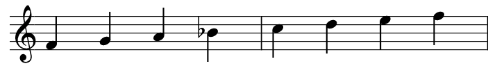

I temaet noter sa vi at et intervall var mellomrommet mellom to toner. Skalaer konstrueres ut i fra disse intervallene. En dur-skala vil alltid være bygget opp av den samme rekkefølgen av intervaller, uansett hvilken tone den starter på.
Her kan du se og høre to durskalaer. Den første er C-dur, den andre er D-dur. Hør godt etter og legg merke til at de starter på forskjellige toner, så er humøret/stemningen lik.
Begge er dur-skalaer, og rekkefølgen av intervaller er lik, selv om tonene er forskjellige. På neste side finner du en kort quiz, før vi går inn på intervallene i dur- og mollskalaene.

